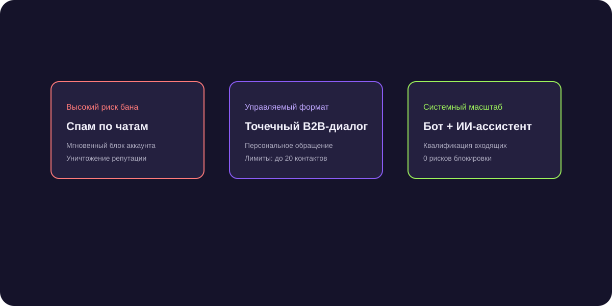

Как найти клиентов в Telegram: руководство для B2B и экспертов
Как найти клиентов в телеграм волнует каждого предпринимателя, желающего использовать потенциал самого быстрорастущего мессенджера без риска блокировки аккаунтов и негатива со стороны целевой аудитории.

Короткий ответ
Поиск клиентов в Telegram строится на системной работе с сообществами и прямом выходе на лиц, принимающих решения. Наиболее результативные белые методы включают мониторинг коммерческих запросов в отраслевых группах по ключевым словам, экспертный комментинг, точечный персональный аутрич по открытым профилям руководителей и запуск таргетированной рекламы Telegram Ads.
Шесть работающих способов найти заказчиков в Telegram
Подробный разбор проверенных инструментов:
- Мониторинг отраслевых чатов: отслеживание сообщений участников по словам «ищу подрядчика», «посоветуйте сервис», «нужен специалист».
- Парсинг целевых каналов: сбор открытых контактов администраторов и активных комментаторов каналов вашей тематики.
- Экспертные гостевые эфиры: проведение совместных стримов и вебинаров в каналах со смежной аудиторией.
- Личный блог или канал компании: регулярная публикация кейсов, привлекающая органический трафик через репосты.
- Официальный Telegram Ads: показ коротких объявлений в каналах конкурентов с прямым переходом в диалог или бот.
- Точечный аутрич по ЛПР: индивидуальное персональное сообщение с разбором конкретной проблемы бизнеса адресата.
Как отличить реального клиента от спамера
Перед началом диалога проверьте профиль: наличие юзернейма, реального имени, должности в описании (Bio) и привязки к корпоративному каналу. Общайтесь только с верифицированными аккаунтами, чтобы не тратить время на фейков.
Первое касание: как написать, чтобы вам ответили
Формула первого сообщения проста: «Где нашел + Что заметил + Как можем помочь + Легкий вопрос». Никаких длинных резюме и ссылок на сайт в первом предложении.
38 контрактов на разработку сайтов через мониторинг чатов
Настроив автоматический перехват запросов на разработку в 40 профильных Telegram-чатах, агентство мгновенно связывалось с заказчиками в первые 3 минуты. Это дало 38 закрытых сделок за квартал.